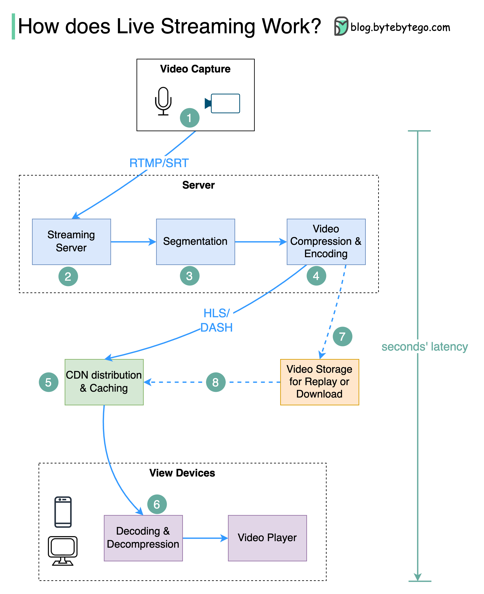

How do video live streamings work on YouTube, TikTok live, or Twitch? The technique is called live streaming.
Livestreaming differs from regular streaming because the video content is sent via the internet in real-time, usually with a latency of just a few seconds.
The diagram below explains what happens behind the scenes to make this possible.
Step 1: The raw video data is captured by a microphone and camera. The data is sent to the server side.
Step 2: The video data is compressed and encoded. For example, the compressing algorithm separates the background and other video elements. After compression, the video is encoded to standards such as H.264. The size of the video data is much smaller after this step.
Step 3: The encoded data is divided into smaller segments, usually seconds in length, so it takes much less time to download or stream.
Step 4: The segmented data is sent to the streaming server. The streaming server needs to support different devices and network conditions. This is called ‘Adaptive Bitrate Streaming.’ This means we need to produce multiple files at different bitrates in steps 2 and 3.
Step 5: The live streaming data is pushed to edge servers supported by CDN (Content Delivery Network.) Millions of viewers can watch the video from an edge server nearby. CDN significantly lowers data transmission latency.
Step 6: The viewers’ devices decode and decompress the video data and play the video in a video player.
Steps 7 and 8: If the video needs to be stored for replay, the encoded data is sent to a storage server, and viewers can request a replay from it later.
Standard protocols for live streaming include:
Both HLS and DASH support adaptive bitrate streaming.